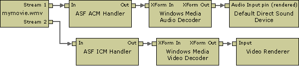

[The feature associated with this page, DirectShow, is a legacy feature. It has been superseded by MediaPlayer, IMFMediaEngine, and Audio/Video Capture in Media Foundation. Those features have been optimized for Windows 10 and Windows 11. Microsoft strongly recommends that new code use MediaPlayer, IMFMediaEngine and Audio/Video Capture in Media Foundation instead of DirectShow, when possible. Microsoft suggests that existing code that uses the legacy APIs be rewritten to use the new APIs if possible.]
This filter is the legacy source filter for Windows Media® content. It is used by Windows Media Player 6.4. In general, the simplest and most reliable way to use this filter is to use the Windows Media Player 6.4 ActiveX control. Many of the methods exposed by this filter are also exposed through the ActiveX control. See the Windows Media Player SDK for more information.
When this filter is given the name of a local ASF file or a URL for a remote file, it reads the file, parses the compressed streams, and creates an output pin for each one. This filter does not use the Windows Media Format SDK. It uses the installable codec versions of the Windows Media decoders, not the DMO versions. The audio output pin always connects to the ASF ACM Handler filter, and the video pin always connects to the ASF ICM Handler. (ICM in this case refers to the original name of the Video Compression Manager.) The filter does not support seeking.
The following diagram shows a filter graph with this filter.

To maintain backward compatibility with Windows Media Player 6.4, this filter is the default source filter for files with .wma, .wmv, and .asf file extensions. For file playback, newer applications should use the WM ASF Reader filter. However, the WM ASF Reader does not support playback of streamed content.
The simplest way for an application to play streamed Windows Media-based content is to use the Windows Media Player SDK. Another option is to use the Windows Media Format SDK. Attempting to create a custom player based on the Windows Media Source Filter is not recommended.
| Label | Value |
|---|---|
| Filter interfaces | IBaseFilter, IAMChannelInfo, IAMExtendedSeeking, IAMMediaContent, IAMOpenProgress, IAMNetShowConfig, IAMNetShowExProps, IAMNetShowPreroll, IAMNetworkStatus, IFileSourceFilter |
| Input pin media types | Not applicable. |
| Input pin interfaces | Not applicable. |
| Output pin media types | Varies depending on the streams within the ASF file. |
| Output pin interfaces | IMediaSeeking |
| Filter CLSID | See Remarks |
| Executable | dxmasf.dll |
| Merit | MERIT_NORMAL |
| Filter Category | CLSID_LegacyAmFilterCategory |
Â
The filter's CLSID is not defined in qnetwork.h. Use this macro in your own header file:
// {6B6D0800-9ADA-11d0-A520-00A0D10129C0}
DEFINE_GUID(CLSID_NetShowSource,
0x6b6d0800, 0x9ada, 0x11d0, 0xa5, 0x20, 0x0, 0xa0, 0xd1, 0x1, 0x29, 0xc0);
Reading ASF Files in DirectShow
Â
Â